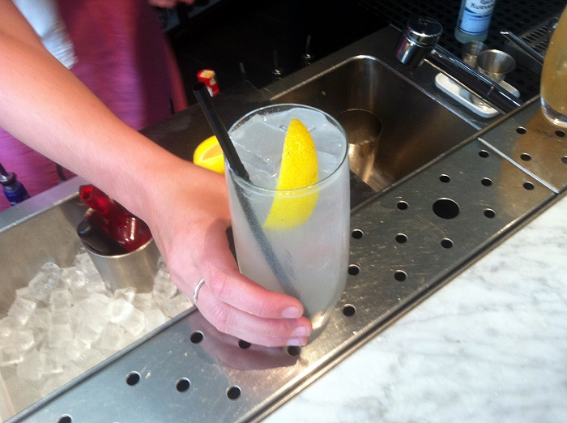

Branding
Website Logo
Navigation
Home page
Here are four popular types of lemonade:
Classic lemonade: Made with freshly squeezed lemon juice, sugar, and water.
Strawberry lemonade: A twist on classic lemonade, made with strawberries blended in.
Peach lemonade: Made with fresh peaches and lemon juice, sweetened to taste.
Raspberry lemonade: Made with raspberries and lemon juice, sweetened to taste.
Here are the ingredients for the four popular lemonades:
Classic lemonade: Fresh lemon juice (from about 6-8 lemons) Granulated sugar Water Strawberry lemonade: Fresh lemon juice (from about 6-8 lemons) Granulated sugar Water Fresh strawberries Peach lemonade: Fresh lemon juice (from about 6-8 lemons) Granulated sugar Water Fresh peaches Raspberry lemonade: Fresh lemon juice (from about 6-8 lemons) Granulated sugarWater
pFresh raspberries
Here's how to make each of the four popular lemonades using the ingredients listed above:
Classic lemonade:
Squeeze the lemon juice into a pitcher.
Add sugar and stir until dissolved. Add water and stir to combine. Taste and adjust sweetness as desired. Chill in the refrigerator until ready to serve. Strawberry lemonade: Blend strawberries in a blender until smooth. Strain the blended strawberries to remove the seeds. Squeeze the lemon juice into a pitcher. Add sugar and stir until dissolved. Add water, the strained strawberries, and stir to combine. Taste and adjust sweetness as desired. Chill in the refrigerator until ready to serve. Peach lemonade:Peel and chop the peaches.
Blend peaches in a blender until smooth.
Squeeze the lemon juice into a pitcher.
Add sugar and stir until dissolved.
Add water, the blended peaches, and stir to combine. Taste and adjust sweetness as desired. Chill in the refrigerator until ready to serve. Raspberry lemonade: Blend raspberries in a blender until smooth. Strain the blended raspberries to remove the seeds.Squeeze the lemon juice into a pitcher.
Add sugar and stir until dissolved.
Add water, the strained raspberries, and stir to combine.
Taste and adjust sweetness as desired.
Chill in the refrigerator until ready to serve.
Ingredients
Images for the Page 2
